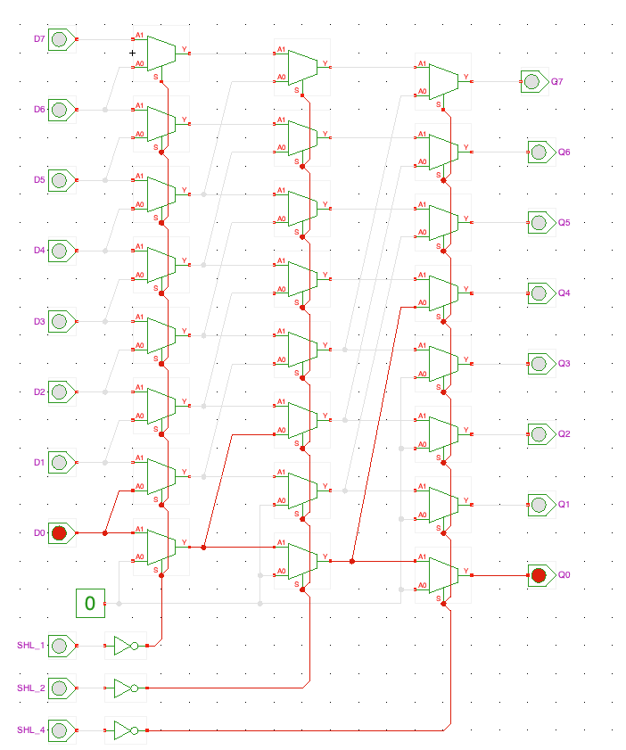
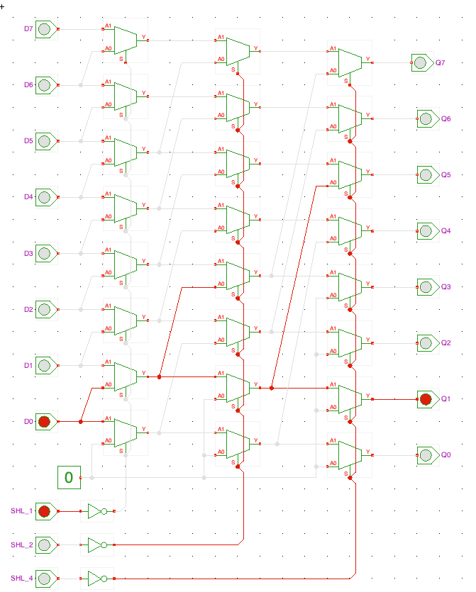
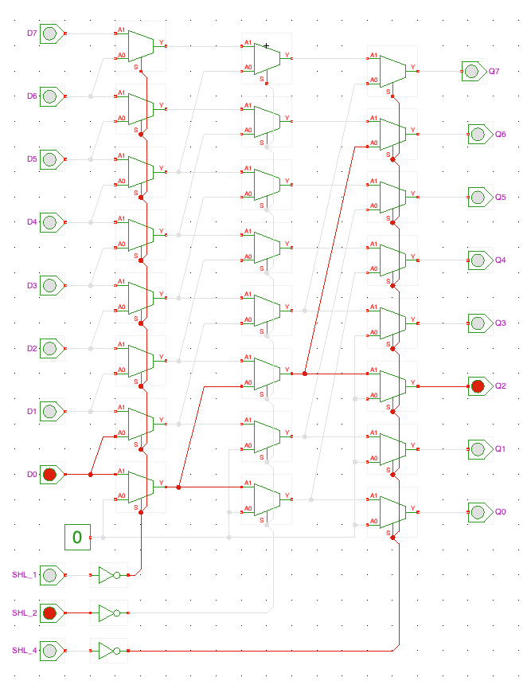
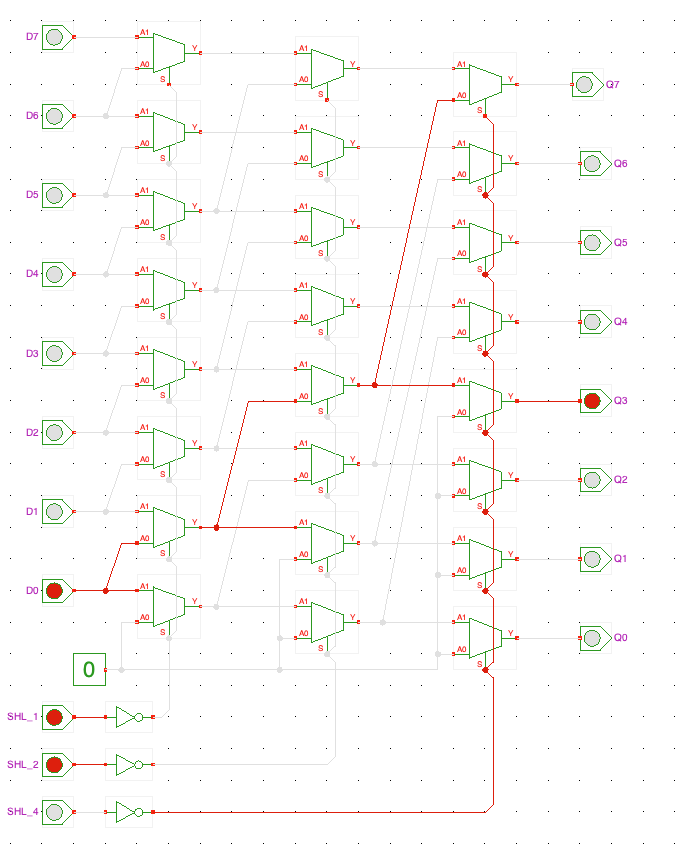
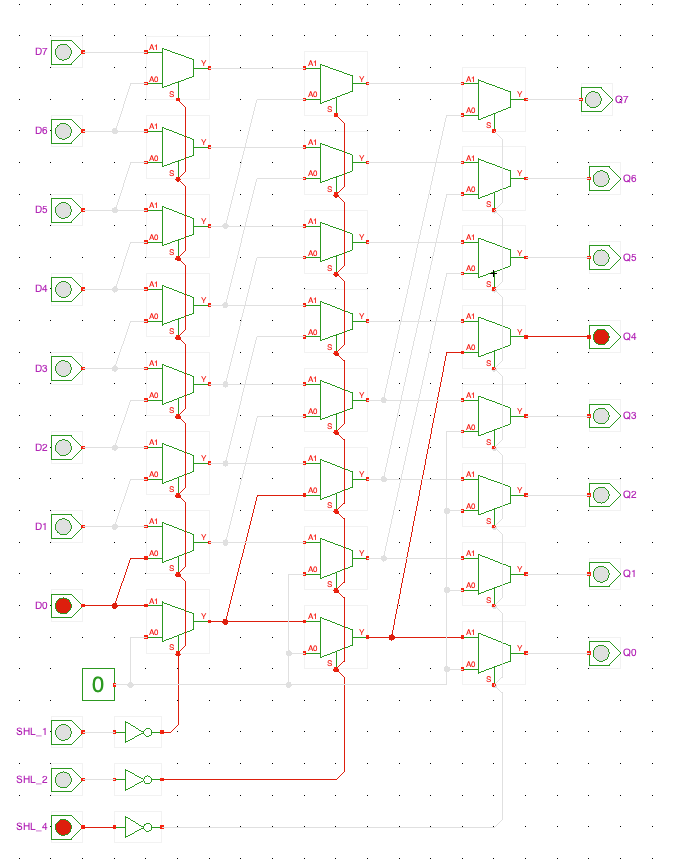
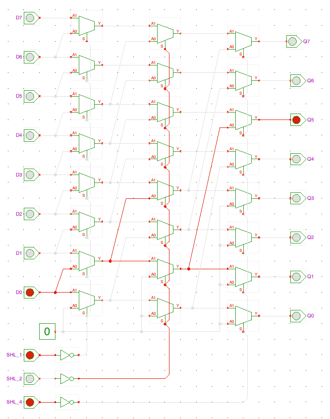
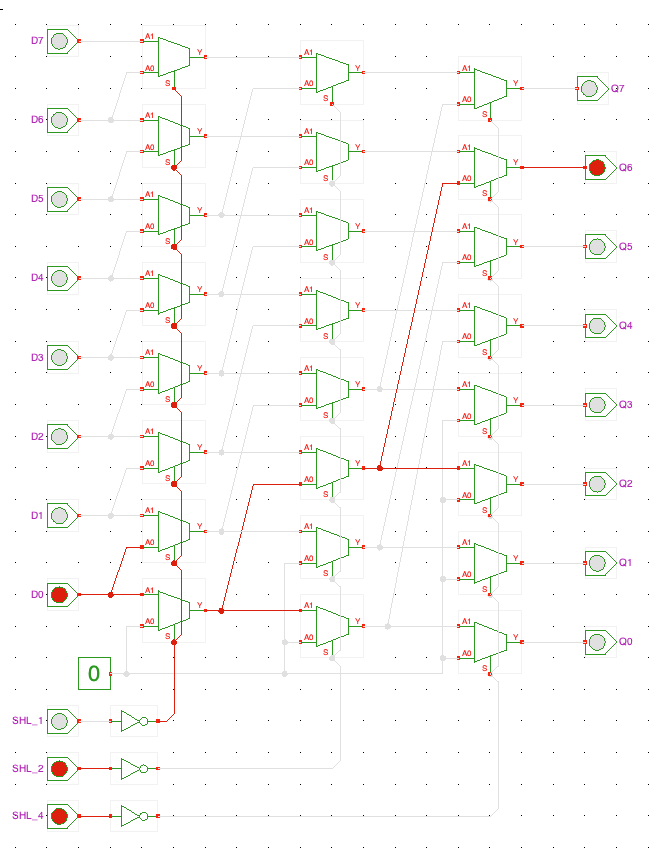
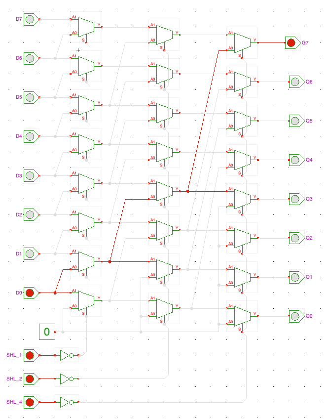
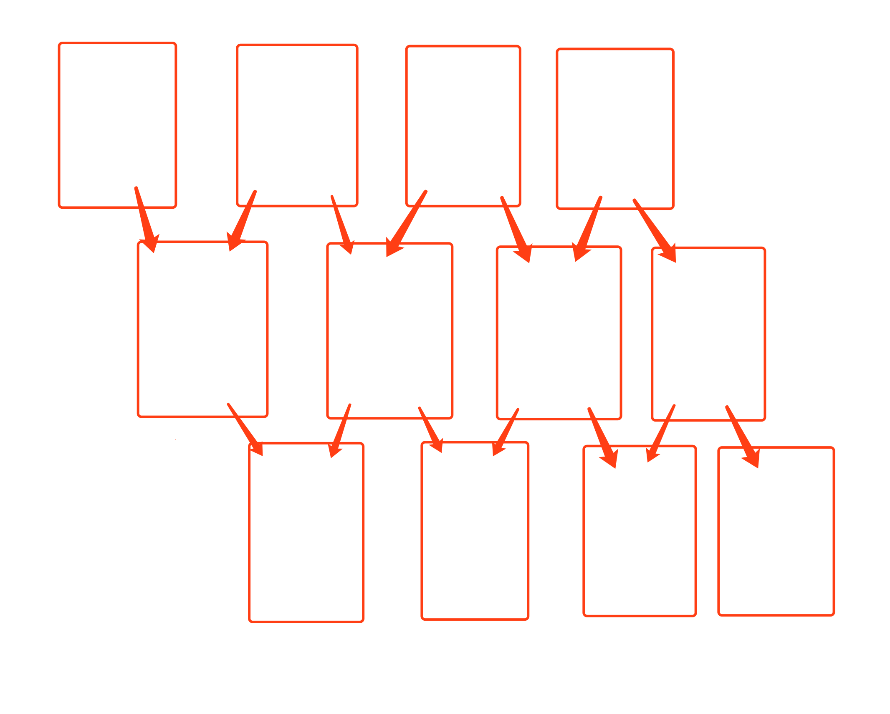
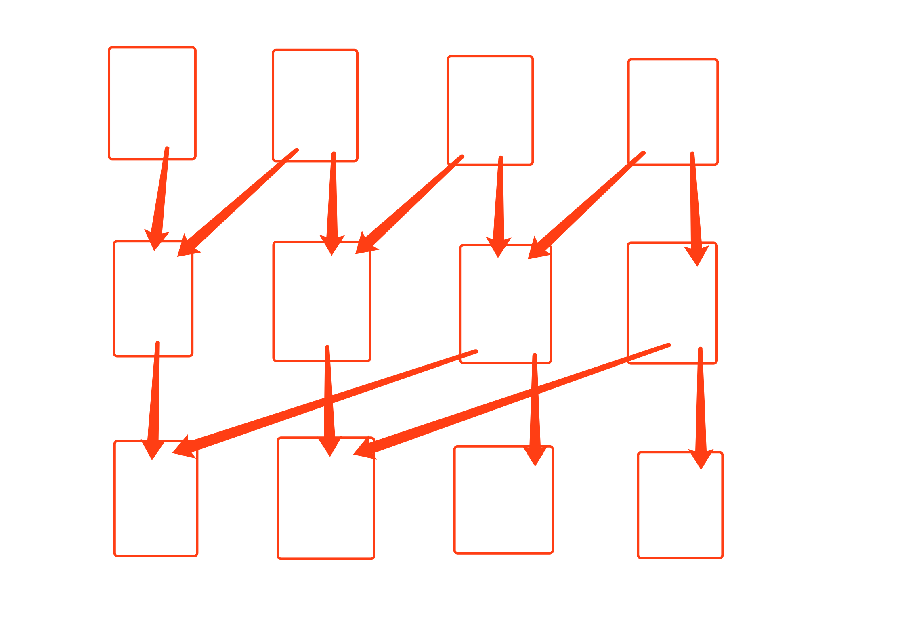

6. Verilog实现32位桶形移位器（barrel shifter）
6.1. 一、提出问题和探索
FPGA的教材上面有一个题是实现一个32位的桶形移位器，要求可以在一个时钟周期内对32位数进行逻辑左移、逻辑右移、算术左移、算术右移、循环左移、循环右移。
我当时看到这道题一脸懵逼，什么是桶形移位器？和桶有什么关系？
然后我上百度搜索，看到百度百科里面是这样解释的：
果然看完还是一脸懵逼。
然后我继续在网络上搜索和找好友求助，最后发现了这样一个网站：https://tams.informatik.uni-hamburg.de/applets/hades/webdemos/10-gates/60-barrel/shifter8.html
网站里面有一篇解释barrel shifter 如何实现的文章，看完后依然似懂非懂。但是这个网站有个非常给力的地方，它把电路的仿真做成了一个Java程序可以下载使用，这里提供了一个8位的barrel shifter 逻辑右移仿真程序，于是我把它下载了下来。
6.2. 二、原理分析
启动之后，我按照网页上的说明实际操作了一下这个仿真程序，实现了从0～7位的逻辑右移，上图片：
仿真图片（多图预警）








如上图所示，D0～D7的数据经过三排选择器之后可以被控制位移0～7位输出到Q0～Q7 。每一排选择器的控制端为同一个信号SHL_1、SHL_2或SHL_4，其中第一排（最左边开始数）选择器实现一位右移，第二排实现两位右移，第三排实现了四位右移，即第N排实现右移$2^{N-1}$位，然后通过三排选择器的组合实现指定数量的右移。看到这里我恍然大悟，这不正是二进制数的表示方式吗？
在理解了桶形移位器的原理之后，我依然对barrel shifter这个名字感到困惑，这和桶有什么关系呢？
于是我作出了这样的猜想，如下图所示：

红色的框框是桶，箭头是水龙头，众所周知水龙头可以打开也可以关闭。通过打开和关闭水龙头，就可以实现控制最顶层第四个桶里面的酒流到最底层右边三个桶的任意一个里面。
但是这样的方式显然不是最优的，因为每次只能移动一位，所以在只有3排桶的情况下，最顶层第四个桶 里面的酒无论如何都流不到最底层第一个桶里面。
于是稍作调整之后产生了优化过后的“酒桶图”：

在这个图里，顶层右边的酒桶就可以流到底层和自己同一列或者在自己左边 的任意桶内，把这里的桶、水龙头、酒分别替换成电路里面的的选择器、电路、电平信号就成了左移的逻辑位移器。如果要实现算术位移、循环位移只是接法略有区别，原理是一样的。
6.3. 三、Verilog实现和仿真
实现代码
`timescale 1ns / 1ps module barrelShifter( output reg [31:0] out, input [31:0] data, input [1:0] type, input direction, input [4:0] len ); always @(*) case(type) 2'b01: // logic shifter begin if(direction) begin // right out = len[0] ? {1'b0, data[31:1]} : data; out = len[1] ? {2'b0, out[31:2]} : out; out = len[2] ? {4'b0, out[31:4]} : out; out = len[3] ? {8'b0, out[31:8]} : out; out = len[4] ? {16'b0, out[31:16]} : out; end else begin // left out = len[0] ? {data[30:0], 1'b0} : data; out = len[1] ? {out[29:0], 2'b0} : out; out = len[2] ? {out[27:0], 4'b0} : out; out = len[3] ? {out[23:0], 8'b0} : out; out = len[4] ? {out[15:0], 16'b0} : out; end end 2'b10: // arithmetic shifter begin if(direction) begin // right out = len[0] ? {data[31], data[31:1]} : data; out = len[1] ? {{2{out[31]}}, out[31:2]} : out; out = len[2] ? {{4{out[31]}}, out[31:4]} : out; out = len[3] ? {{8{out[31]}}, out[31:8]} : out; out = len[4] ? {{16{out[31]}}, out[31:16]} : out; end else begin // left out = len[0] ? {data[30:0], 1'b0} : data; out = len[1] ? {out[29:0], 2'b0} : out; out = len[2] ? {out[27:0], 4'b0} : out; out = len[3] ? {out[23:0], 8'b0} : out; out = len[4] ? {out[15:0], 16'b0} : out; end end 2'b11: // cyclic shifter begin if(direction) begin // right out = len[0] ? {data[0], data[31:1]} : data; out = len[1] ? {out[1:0], out[31:2]} : out; out = len[2] ? {out[3:0], out[31:4]} : out; out = len[3] ? {out[7:0], out[31:8]} : out; out = len[4] ? {out[15:0], out[31:16]} : out; end else begin // left out = len[0] ? {data[30:0], data[31]} : data; out = len[1] ? {out[29:0], out[31:30]} : out; out = len[2] ? {out[27:0], out[31:28]} : out; out = len[3] ? {out[23:0], out[31:24]} : out; out = len[4] ? {out[15:0], out[31:16]} : out; end end endcase endmodule
仿真代码
逻辑左移：
`timescale 1ns / 1ps module test_logic_shifter_left; // Inputs reg [31:0] data; reg [1:0] type; reg direction; reg [4:0] len; // Outputs wire [31:0] out; // Instantiate the Unit Under Test (UUT) barrelShifter uut ( .out(out), .data(data), .type(type), .direction(direction), .len(len) ); initial begin // Initialize Inputs data <= {32{1'b1}}; type <= 2'b01; direction <= 0; len <= 0; end always #10 len = len + 1; endmodule
逻辑右移：
`timescale 1ns / 1ps module test_logic_shifter_right; // Inputs reg [31:0] data; reg [1:0] type; reg direction; reg [4:0] len; // Outputs wire [31:0] out; // Instantiate the Unit Under Test (UUT) barrelShifter uut ( .out(out), .data(data), .type(type), .direction(direction), .len(len) ); initial begin // Initialize Inputs data = {32{1'b1}}; type = 2'b01; direction = 1; len = 0; end always #10 len = len + 1; endmodule
算术左移:
`timescale 1ns / 1ps module test_arithmetic_shifter_left; // Inputs reg [31:0] data; reg [1:0] type; reg direction; reg [4:0] len; // Outputs wire [31:0] out; // Instantiate the Unit Under Test (UUT) barrelShifter uut ( .out(out), .data(data), .type(type), .direction(direction), .len(len) ); initial begin // Initialize Inputs data <= {32{1'b1}}; type <= 2'b10; direction <= 0; len <= 0; end always #10 len = len + 1; endmodule
算术右移:
`timescale 1ns / 1ps module test_arithmetic_shifter_right; // Inputs reg [31:0] data; reg [1:0] type; reg direction; reg [4:0] len; // Outputs wire [31:0] out; // Instantiate the Unit Under Test (UUT) barrelShifter uut ( .out(out), .data(data), .type(type), .direction(direction), .len(len) ); initial begin // Initialize Inputs data <= {{16{1'b1}}, {16{1'b0}}}; type <= 2'b10; direction <= 1; len <= 0; end always #10 len = len + 1; endmodule
循环左移:
`timescale 1ns / 1ps module test_cyclic_shifter_left; // Inputs reg [31:0] data; reg [1:0] type; reg direction; reg [4:0] len; // Outputs wire [31:0] out; // Instantiate the Unit Under Test (UUT) barrelShifter uut ( .out(out), .data(data), .type(type), .direction(direction), .len(len) ); initial begin // Initialize Inputs data <= {8{4'b0001}}; type <= 2'b11; direction <= 0; len <= 0; end always #10 len = len + 1; endmodule
循环右移:
`timescale 1ns / 1ps module test_cyclic_shifter_right; // Inputs reg [31:0] data; reg [1:0] type; reg direction; reg [4:0] len; // Outputs wire [31:0] out; // Instantiate the Unit Under Test (UUT) barrelShifter uut ( .out(out), .data(data), .type(type), .direction(direction), .len(len) ); initial begin // Initialize Inputs data <= {8{4'b0001}}; type <= 2'b11; direction <= 1; len <= 0; end always #10 len = len + 1; endmodule